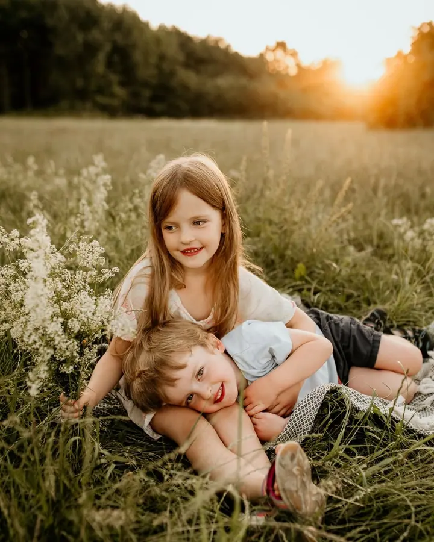
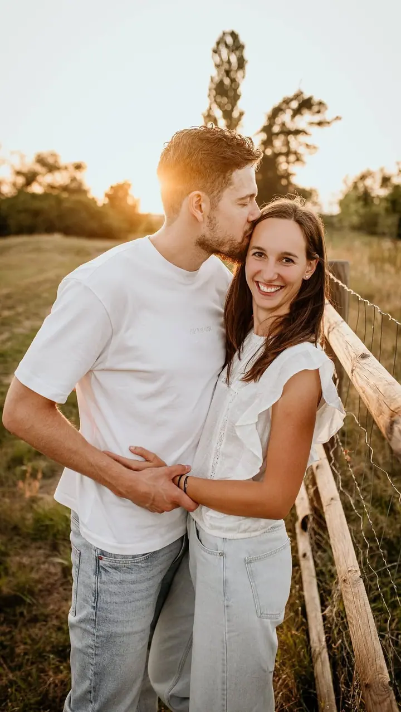
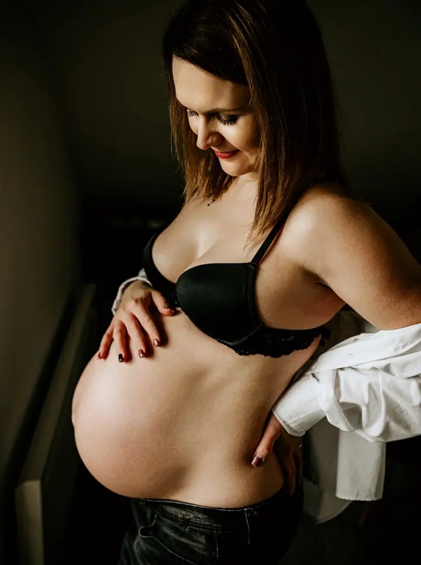
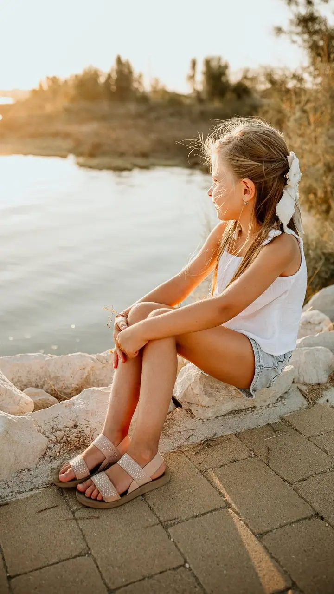

Svatební focení
Svatební den je plný emocí, smíchu a nečekaných momentů. Jsem u něj jako tichý pozorovatel, který má být ve správnou chvíli na správném místě.

Jmenuji se Lenka Šílová a jsem rodinná a svatební fotografka. Fotím převážně v Praze a v okolí Rychnova nad Kněžnou, kde potkávám rodiny, nastávající maminky i úplně čer…
Rezervovat termínVěřím, že ty nejkrásnější momenty vznikají, když jste sami sebou. Proto se snažím, aby focení působilo spíš jako příjemné setkání než jako povinnost. Většinou si do kalendáře zapisuji jen jedno focení denně, abychom měli čas se poznat, v klidu si popovídat a naladit se na stejnou vlnu.


Jsem maminka dvou malých dětí, takže vím, jaké obavy vás před focením mohou provázet. Dětem vozím v batohu vždycky nějakou drobnost jako poděkování a chci, aby mě braly spíš jako kamarádku, která s nimi přijela dělat blbosti, než jako fotografku.
Fotky pro mě nejsou jen obrázky. Jsou to kotvy, ke kterým se můžete kdykoli vrátit a připomenout si, co je opravdu důležité. Nejraději fotím v přírodě při západu slunce, ale po domluvě za vámi přijedu téměř kamkoliv.
Co fotím
Svatební den je plný emocí, smíchu a nečekaných momentů. Jsem u něj jako tichý pozorovatel, který má být ve správnou chvíli na správném místě.
Neřeším, kdo se kam dívá, prostě fotím to, jací opravdu jste. Nejraději v přírodě při západu slunce, ale klidně i u vás doma nebo v ateliéru v Praze.
Focení, při kterém je bříško v hlavní roli. Trvá přibližně hodinu a ráda do něj zakomponuji i vaši osobní drobnost, třeba fotku z ultrazvuku nebo botičky.
Přijedu za vámi domů se vším potřebným, s košíky, dečkami i oblečky. Pokud chcete fotky bez aranžování, nabízím i lifestylové focení miminka u vás v náručí.
Postup
Společně vybereme termín a místo. Mám několik oblíbených lokalit, ale ráda uvítám i vaše nápady, focení u vás doma nebo v ateliéru v Praze.
Poradím vám, jak se barevně sladit, a nejlépe fungují zemité tóny. Pro děti a maminky mám k dispozici i oblečení k zapůjčení.
Vždy si vyhrazuji dostatek času, abychom se seznámili a prohodili pár slov. Sleduji, jak spolu přirozeně jste, a jen jemně navádím.
Zpravidla do týdne vám pošlu náhledy, ze kterých si vyberete. Upravené fotky v plném rozlišení posílám do 3–4 týdnů od výběru a součástí balíčků jsou i tištěné fotografie.
Otázky
Ideálně mezi 30. a 34. týdnem těhotenství, kdy bříško krásně vynikne. Ozvěte se mi prosím s předstihem, ať s vámi můžu předběžně počítat.
Nejlépe už v těhotenství, abych si pro vás rezervovala přibližný termín. Ideální je fotit 7 až 10 dní po narození, newborn focení trvá 3 až 4 hodiny. Lifestylové focení trvá zhruba 2 hodiny a může proběhnout i několik týdnů po porodu.
Krásně vypadají přírodní a zemité barvy jako smetanová, béžová, hnědá, šedá nebo tlumená zelená. Vyhněte se křiklavým barvám, výrazným vzorům a velkým nápisům. Ráda vám se stylingem poradím a něco můžu i zapůjčit.
Převážně v Praze a v okolí Rychnova nad Kněžnou ve východních Čechách. Nejraději v přírodě při západu slunce, ale můžu přijet i k vám domů nebo můžeme zamluvit ateliér v Praze. Po domluvě přijedu téměř kamkoliv.
